| Seta. Permite que se faça redimensionamentos, movimente componentes ou selecione dentre outras funções. | |
| 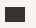 | Entidade. Possibilita adicionar entidades ao modelo, sendo possível redimensionar e mover de local. |
| 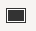 | Entidade fraca. Entidades fracas são entidades cujas tuplas só existem em razão de tuplas de outra entidade. |
| 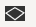 | Entidade associativa. Entidades associativas são utilizadas quando um relacionamento precisa se relacionar com outro. |
| Relacionamento. Possibilita adicionar relacionamentos ao modelo, permitindo a integração entre as entidades. | |
| 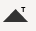 | Herança total. Herança total é utilizado quando todas as tuplas da entidade obrigatoriamente será especializada em outra entidade. |
| 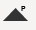 | Herança parcial. Herança parcial é utilizado quando não é obrigatório que as tuplas se especialize, ficando somente na super entidade. |
| 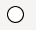 | Atributo. Possibilita adicionar atributos ao modelo, sendo move-los de local. |
| Atributo chave. Atributos chave são identificadores de tuplas, usualmente chamados de chave primária. | |
| 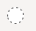 | Atributo derivado. Representa um valor calculado, por exemplo idade quando se tem como obter essa informação a partir da data de aniversário. |
| 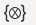 | Atributo composto. Representa um atributo que pode possuir vários valores, por exemplo telefone onde pode-se haver vários, puramente conceitual. |
| 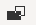 | Auto relacionamento. Permite que uma entidade se relacione com ela mesma, criando um auto-relacionamento. |
| 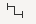 | Ligação. Realização a ligação entre diversos componentes como entidades, heranças e relacionamentos. |
| 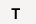 | Notação textual. Adiciona uma bloco de texto no modelo para se fazer observações. |